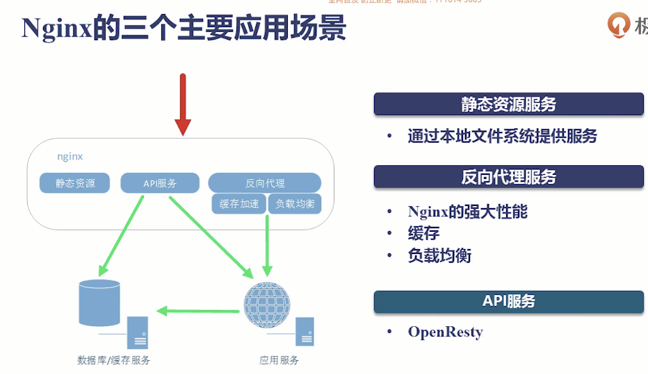
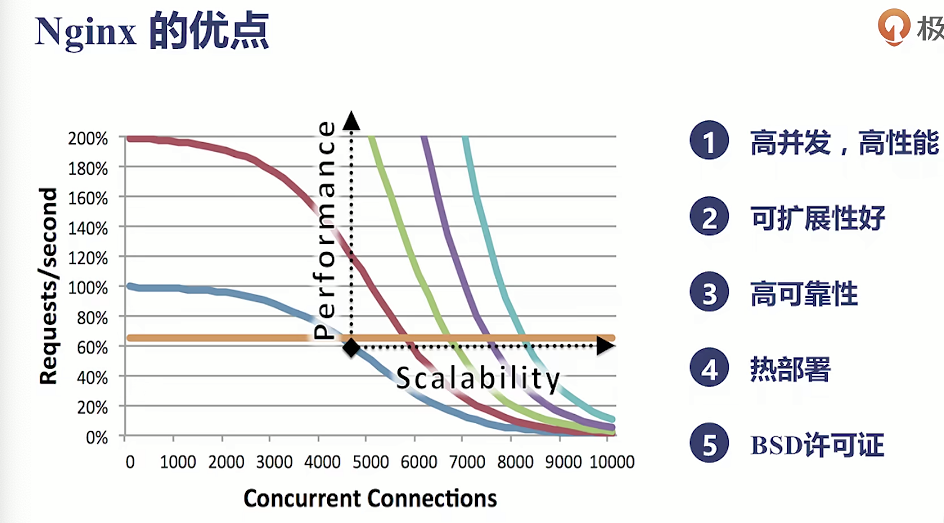
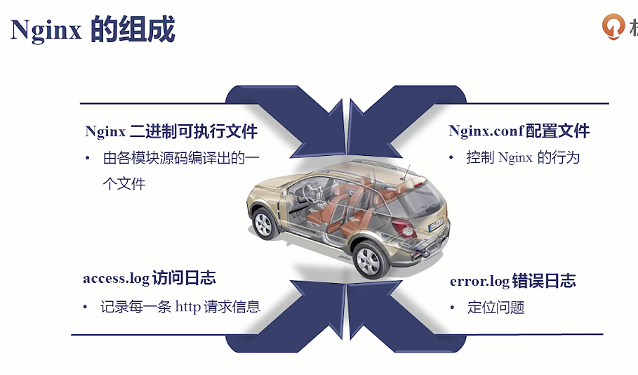
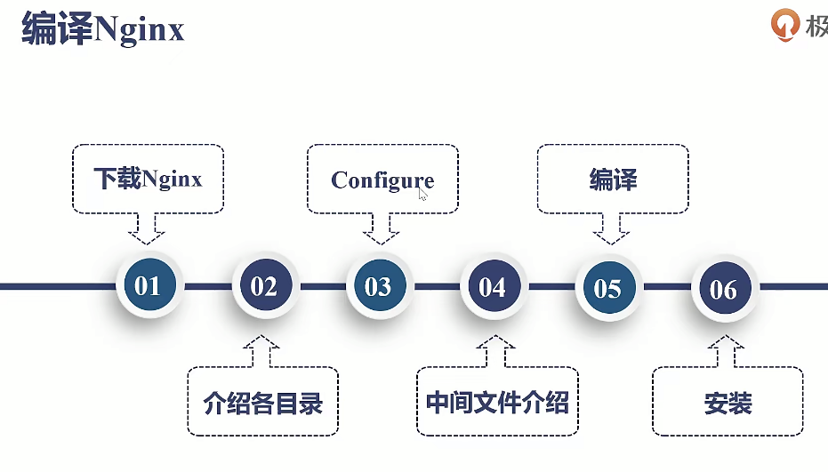
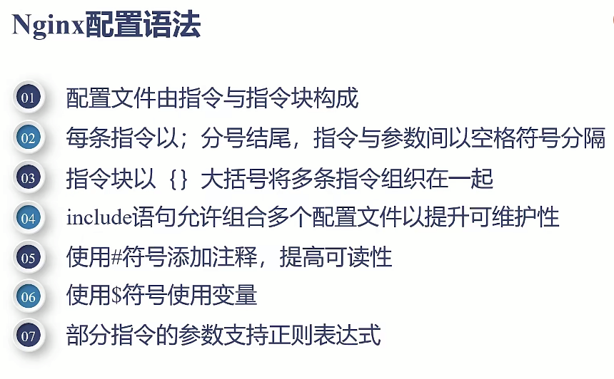
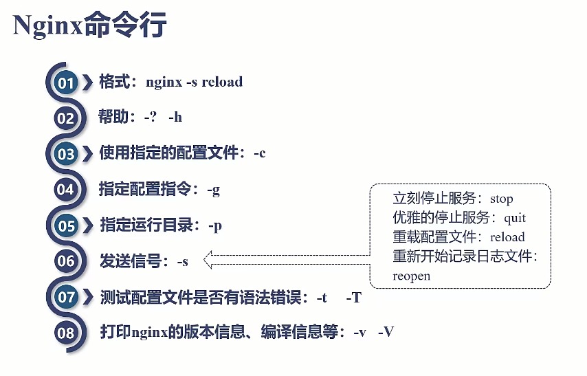

Apache 单个进程只能处理单个请求，类似cpu切换的逻辑，大量请求进来的时候，无法开启大量线程，大量线程切换资
源消耗严重，导致低效。
Nginx 事件驱动模型： Nginx 采用了事件驱动的异步架构，它使用单一的主进程来处理多个并发连接。这种模型允许
Nginx 处理大量并发连接而不会为每个连接创建新的线程或进程，从而减少了资源消耗。
IO多路复用： Nginx 使用了事件驱动和IO多路复用机制，例如epoll（在Linux系统中），kqueue（在BSD和macOS系
统中），使其能够高效处理数以千计的并发连接。
高效的网络处理： Nginx 在网络处理方面做了很多优化，包括零拷贝特性、TCP延迟绑定等，减少了数据在用户态和内
核态之间的复制次数，提高了网络数据传输效率。


安装Nginx两种方式，操作系统（yum）直接安装 和 编译，Nginx的2进制文件会把模块直接编译进来，官方的Nginx
模块并不是默认全部开启；如果想添加三方的Nginx模块需要通过编译的方式

想让vim 编辑 niginx配置文件的时候带上语法高亮
～/ 是根目录，如果没有没有.vim 可以手动创建
./configure --prefix=/data/geek/nginx/ 设置安装目录
make 编译
make install 安装到prefix 指定目录

